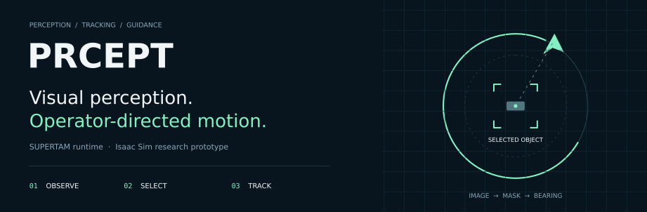
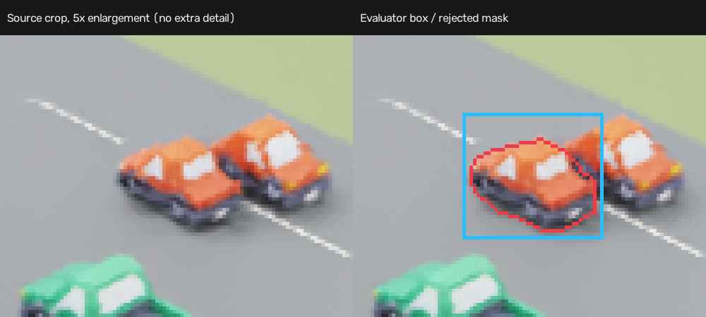
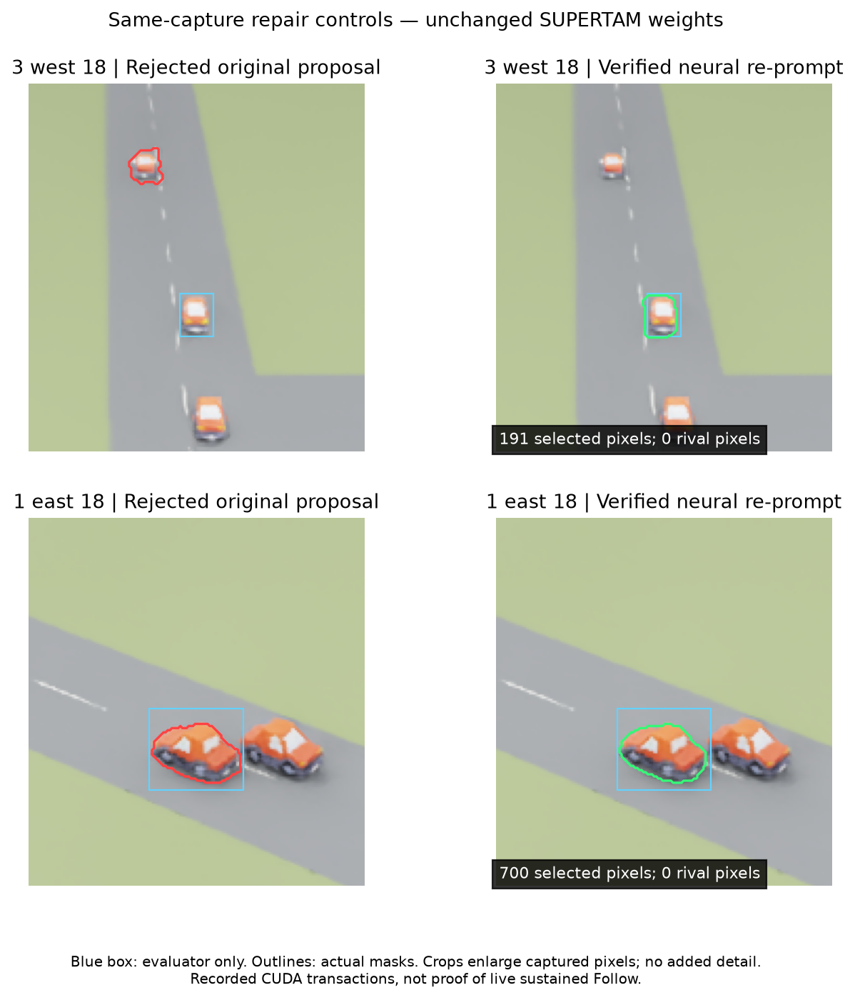
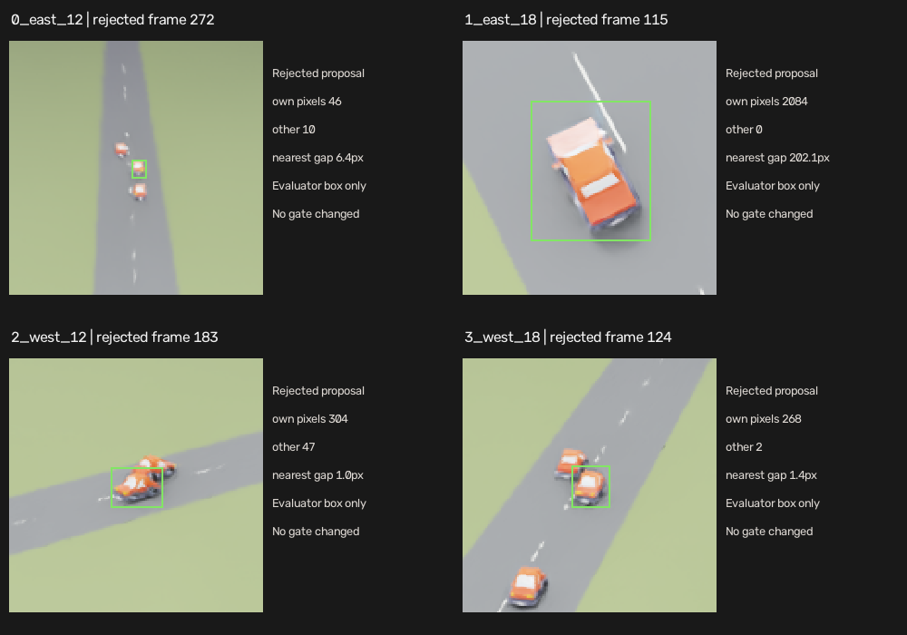

Percept Mark Zero
A personal side project toward a kit-sized fixed-wing a non-pilot can run for observation and search practice.
Loiter over an area, tap something on the video to Follow, Cancel back to loiter, and keep a safe flight plan if the link drops. The research stack also goes by PRCEPT / intair; this page tracks Mark Zero as it stands in simulation.
What works in sim today
- Operator loop: Select → Follow → Stop / Cancel, plus Loiter and Home, in a ground panel over stock ArduPlane SITL.
- Perception path: human-prompted EdgeTAM (plain profile in the simulator); earlier guarded SUPERTAM recovery work is preserved separately.
- Isaac Sim camera + GPU H.264 preview into the browser panel; Stop cleared tracking in under a second on the measured scripted Follow fixture.
- GCS milestones on ArduPlane 4.6.3 SITL: connection/HUD/modes, mission planning, parameters/setup, logs/replay, video/tracking, and operator tools.
- Recovery / re-prompt studies on synthetic crossings: same-car Follow after fresh selection held a 30 s window on most scripted cases; checkers and limits are documented with the flights.
Measured on one scripted Follow fixture
On an RTX 5080, 960×720, four-subframe Isaac path with simultaneous tracking and GPU encode: a complete 30-second scripted Follow held at about 30.9 source-capture fps (minimum three-second rate 30.0) and 29.2 delivered preview fps; Stop cleared tracking in 0.844 s. A longer continuity attempt stopped around 47 s on the existing rival-overlap gate — 60 s Follow is not claimed. These are limited development comparisons on a known fixture, not human-tap or all-scene qualification.
Recovery evidence
Scripted east/west recoveries at 12 and 18 m/s exercised Stop-to-Follow again after crossings. Under the earlier checker the pack scored 7/8; with the later pixel-cell checker the same flights read 8/8. Same-capture neural re-prompt controls (unchanged model weights) show rejected proposals repaired to verified masks on recorded CUDA transactions — that is repair evidence, not a claim of live sustained Follow on every scene.





Still open
- Physical board / radio / RC bench and real outdoor flight.
- Human tap performance and crowded real-world identity.
- Sustained 60 fps capture and all-scene Follow robustness.
- Flight-controller continuity work beyond the scripted recovery packs — recent candidate runs are research modes, not the product default.
Intent
Practice the observation loop for search and watch: find, hold, follow, cancel. Stock ArduPlane underneath; thin operator UI on top. Hardware is on the bench after the sim path is honest.